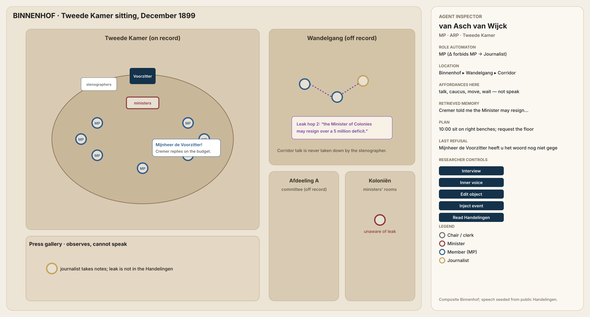

The Binnenhof here is a composite. Procedure should feel right for the late-1890s Tweede Kamer.
The map
Tweede Kamer floor, Eerste Kamer, wandelgang, committee rooms, press gallery, ministries.
Tokens are uniform; colour is role only. There is no playable persona.

Does this layout feel historically reasonable, without copying a single real sitting plan?
Rules of the floor
These are the constraints the sandbox enforces. For each: agree, revise, or reject.
Would this have been allowed, and recorded?
Archive excerpts, simulated lines, and short vignettes. For each: would the Chair have allowed it, and would the stenographer have written it into the Handelingen?